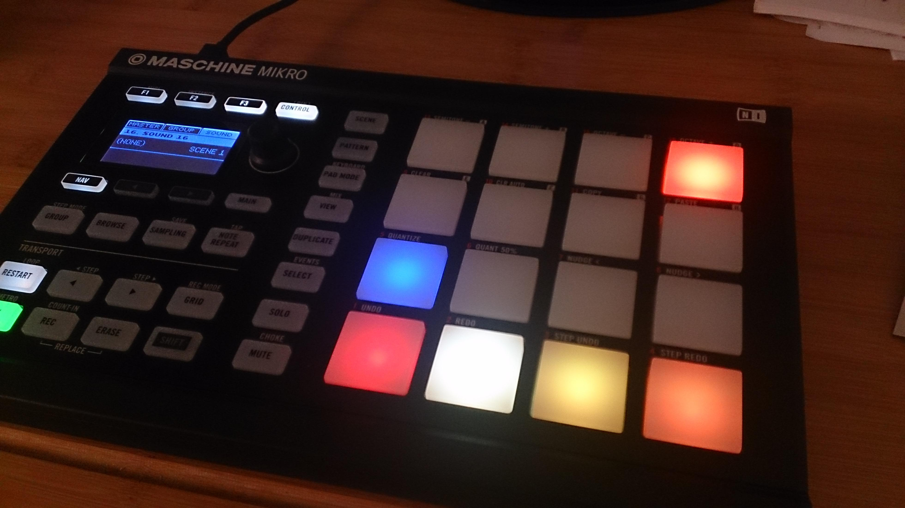
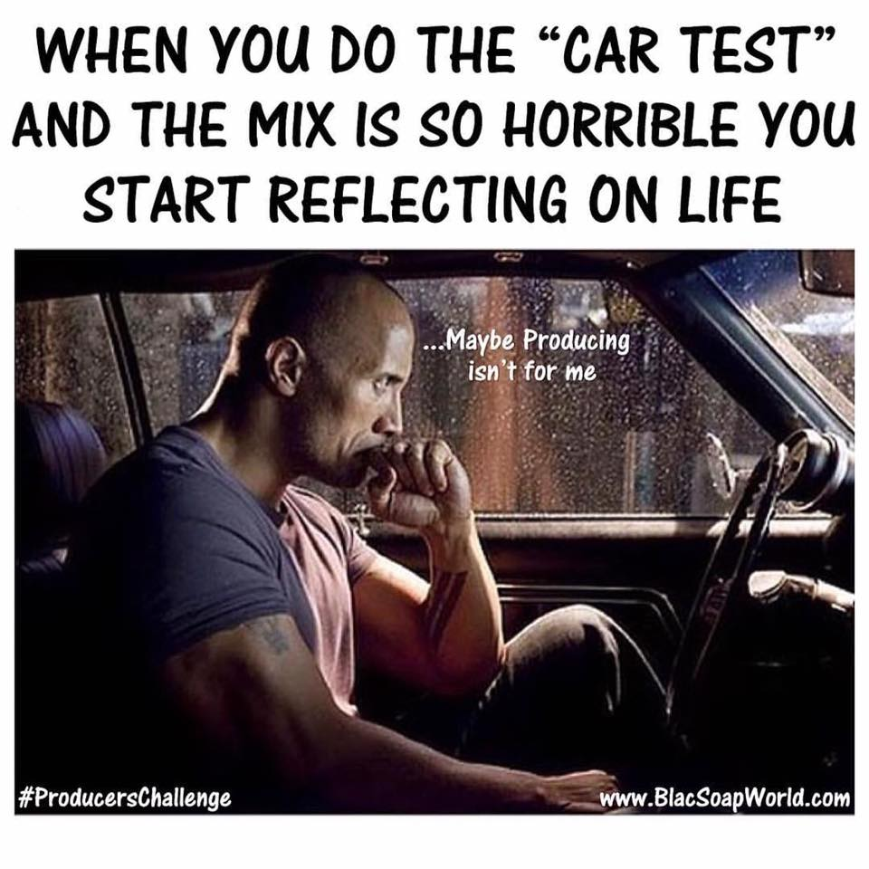

The Beginning
Initially, I had no interest in making music. It was something nice to hear in the
background every once in a while, but other than that, it was never something I
found solace in. That was until I downloaded GarageBand for my then iPhone 5c;
I had no idea what I was doing, but thankfully that wasn't necessary.
This DAW (Digital Audio Workstation) made the process immensely facile. More so, It
almost felt like a video game believe it or not! I was just having fun with the program
and eventually ended up with something you might consider a beat.
Thus, "Spicy Meatball" was created.
My Newfound Passion

As I began to delve into music production, I realized there was a lot I would need
to learn in order to create what I envisioned. The first step in achieving my goals
was purchasing a beat sequencer, the Maschine Mikro MKII.
Most of what I created didn't receive the curtousy of being exported. Out of the dozens of
instrumentals I created, only a handfull were eventually uploaded to my SoundCloud. One of my
favorites being "Soap".
Riding the .wav

There was a moment where I thought I couldn't improve. I felt stuck. There was no
longer any clear direction of what I needed to learn. Rather than looking inward,
I looked elsewhere for inspiration and knowledge. I had just recently made an instrumental, "Mood",
and my friend Kyle loved it. This was right around the time I started recording vocals, so Kyle immediately
asked if we could make a song with it. I was more than happy to and that's how we made our song, "Dark Cage Freestyle".
Where I'm at Now

I started out my journey making exclusively rap instrumentals. For a while, that was nice, but I craved
something more complex. I wanted to make something that showed the extent of my capabilities. This is when
I began tinkering with different genres entirely, such as EDM (Electronic Dance Music). Progressgive House
being the sub-genre that caught my attention. I made a few different songs and recently uploaded my favorite;
aptly named "Progressive House Song".